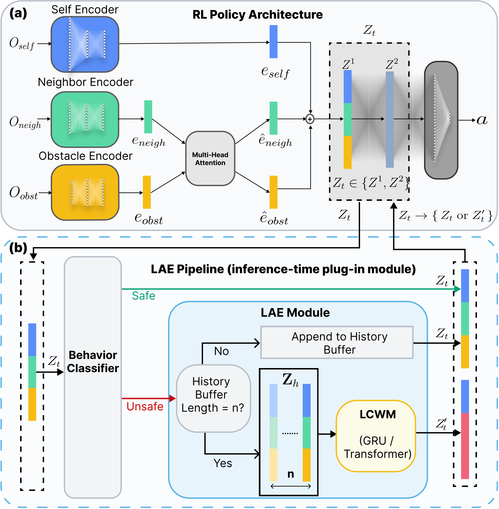
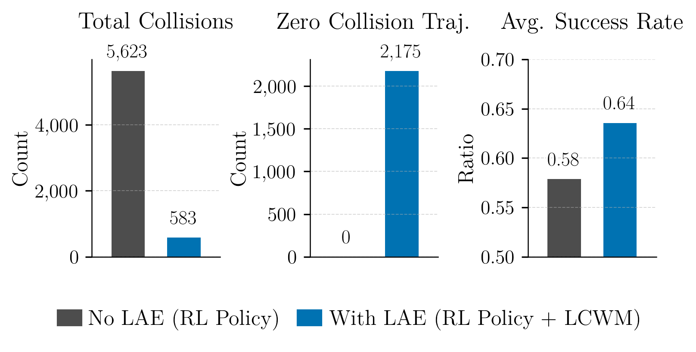
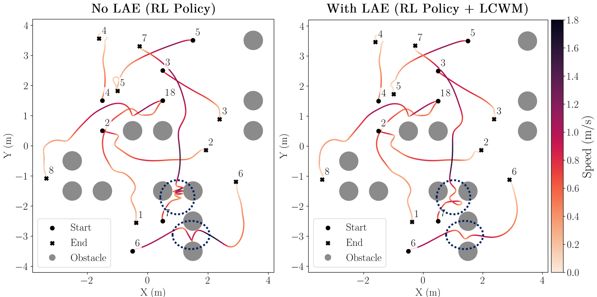

Reinforcement learning has enabled significant progress in complex domains such as coordinating and navigating multiple quadrotors. However, even well-trained policies remain vulnerable to collisions in obstacle-rich environments. Addressing these infrequent but critical safety failures through retraining or fine-tuning is costly and risks degrading previously learned skills. Inspired by activation steering in large language models and latent editing in computer vision, we introduce a framework for inference-time Latent Activation Editing (LAE) that refines the behavior of pre-trained policies without modifying their weights or architecture. The framework operates in two stages: (i) an online classifier monitors intermediate activations to detect states associated with undesired behaviors, and (ii) an activation editing module that selectively modifies flagged activations to shift the policy towards safer regimes. In this work, we focus on improving safety in multi-quadrotor navigation. We hypothesize that amplifying a policy's internal perception of risk can induce safer behaviors. We instantiate this idea through a latent collision world model trained to predict future pre-collision activations, thereby prompting earlier and more cautious avoidance responses. Extensive simulations and real-world Crazyflie experiments demonstrate that LAE achieves statistically significant reduction in collisions (nearly 90% fewer cumulative collisions compared to the unedited baseline) and substantially increases the fraction of collision-free trajectories, while preserving task completion. More broadly, our results establish LAE as a lightweight paradigm, feasible on resource-constrained hardware, for post-deployment refinement of learned robot policies.
Latent Activation Editing (LAE) is an inference-time safety layer that intervenes at a chosen intermediate latent representation Zt inside a frozen reinforcement learning policy. A lightweight behavior classifier continuously monitors these activations and detects states associated with unsafe behavior. When an unsafe latent is detected, LAE replaces Zt with an edited surrogate activation Zt′, after which the policy continues forward normally without any modification to its weights.
In our implementation, the editor is realized using a Latent Collision World Model (LCWM), which predicts future collision-related latent activations from a short history buffer. By amplifying the policy’s internal perception of risk, the edited latent encourages earlier and safer avoidance maneuvers while preserving the policy’s original goal-directed behavior.

We evaluate LAE in large-scale simulation and real-world Crazyflie experiments in obstacle-rich indoor environments. LAE substantially reduces collisions while preserving task success, and maintains identical behavior to the base policy in safe regions.


@misc{das2025latentactivationeditinginferencetime,
title={Latent Activation Editing: Inference-Time Refinement of Learned Policies for Safer Multirobot Navigation},
author={Satyajeet Das and Darren Chiu and Zhehui Huang and Lars Lindemann and Gaurav S. Sukhatme},
year={2025},
eprint={2509.20623},
archivePrefix={arXiv},
primaryClass={cs.RO},
url={https://arxiv.org/abs/2509.20623}
}